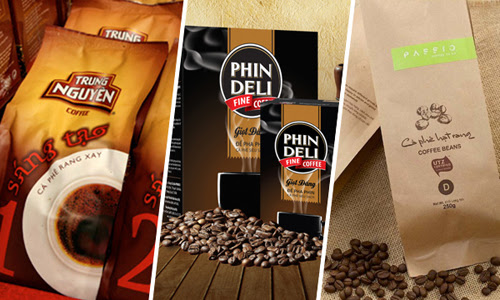
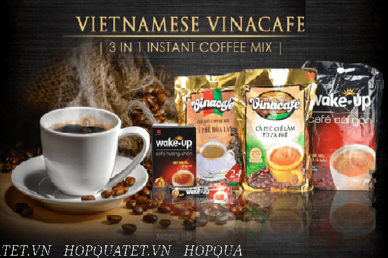
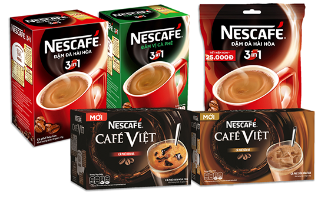

Trung nguyen coffee is most famoust for its strong taste and aroma. it is the leading local brand in Vietnam and a
big exporter - you can find a Trung Nguyen coffee in over 70 countries in the world there is a wide range of
products diverse in the mix of coffee beans and processing methods.
Trung Nguyen coffee has 3 main types, instant coffee, roasted coffee and distinctive(weasel) one.

Focusing more on the mild side, Vina Cafe is among the best choice for instant blended coffee.This brand is
most famous for its creamy, hazelnutty flavor for those with a sweet tooth. Vina Cafe has been the coffe of our
childhood and still most common among Vietnamese households. The most popular ones are VinaCafe 3-in-1,
Wake-up Cafe with Weasel flavor.

NESCAFE-the famous worldwide brand, come with a lot of choice for the discerning market of VietName coffee
connoisseur. AMong their product, instans ones are top of mind. Their blended coffee comes in different levels
of strong tastes that can be no less delicious than their ground coffee counterparts. Their NESCAFE cans
mocha/Latte are a good choice when you want justt a pack of ready made goodness.

[TrungNguyen]
[VinaCafe]
[Nescafe]